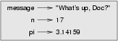

2.1 Values and types
A value is one of the fundamental things---like a letter or
a number---that a program manipulates. The values we have seen so far are
2 (the result when we added 1 + 1), and
"Hello, World!".
These values belong to different types: 2 is
an integer, and "Hello, World!" is a string,
so-called because it contains a string
of letters. You (and the
interpreter) can identify strings because they are enclosed in quotation marks.
The print statement also works for integers.
>>> print 4 4
If you are not sure what type a value has, the interpreter can tell you.
>>> type("Hello, World!")
<type 'str'>
>>> type(17)
<type 'int'>
Not surprisingly, strings belong to the type str and integers belong to the type int. Less obviously, numbers with a decimal point belong to a type called float, because these numbers are represented in a format called floating-point.
>>> type(3.2) <type 'float'>
What about values like "17" and "3.2"? They look
like numbers, but they are in quotation marks like strings.
>>> type("17")
<type 'str'>
>>> type("3.2")
<type 'str'>
They're strings.
When you type a large integer, you might be tempted to use commas between
groups of three digits, as in 1,000,000. This is not a legal
integer in Python, but it is legal:
>>> print 1,000,000 1 0 0
Well, that's not what we expected at all! Python interprets
1,000,000 as a list of three items to be printed. So remember not
to put commas in your integers.
2.2 Variables
One of the most powerful features of a programming language is the ability to manipulate variables. A variable is a name that refers to a value.
The assignment statement creates new variables and gives them values:
>>> message = "What's up, Doc?" >>> n = 17 >>> pi = 3.14159
This example makes three assignments. The first assigns the string
"What's up, Doc?" to a new variable named message.
The second gives the integer 17 to n, and the third
gives the floating-point number 3.14159 to pi.
The assignment operator, =, should not be
confused with an equals sign (even though it uses the same character).
Assignment operators link a name, on the left hand side of the
operator, with a value, on the right hand side. This is why you
will get an error if you enter:
>>> 17 = n
A common way to represent variables on paper is to write the name with an arrow pointing to the variable's value. This kind of figure is called a state diagram because it shows what state each of the variables is in (think of it as the variable's state of mind). This diagram shows the result of the assignment statements:

The print statement also works with variables.
>>> print message What's up, Doc? >>> print n 17 >>> print pi 3.14159
In each case the result is the value of the variable. Variables also have types; again, we can ask the interpreter what they are.
>>> type(message) <type 'str'> >>> type(n) <type 'int'> >>> type(pi) <type 'float'>
The type of a variable is the type of the value it refers to.
2.3 Variable names and keywords
Programmers generally choose names for their variables that are meaningful---they document what the variable is used for.
Variable names can be arbitrarily long. They can contain both
letters and numbers, but they have to begin with a letter. Although it is
legal to use uppercase letters, by convention we don't. If you do, remember
that case matters. Bruce and bruce are different
variables.
The underscore character (_) can appear in a name. It is often used
in names with multiple words, such as my_name or
price_of_tea_in_china.
If you give a variable an illegal name, you get a syntax error:
>>> 76trombones = "big parade" SyntaxError: invalid syntax >>> more$ = 1000000 SyntaxError: invalid syntax >>> class = "Computer Science 101" SyntaxError: invalid syntax
76trombones is illegal because it does not begin with a letter.
more$ is illegal because it contains an illegal character, the
dollar sign. But what's wrong with class?
It turns out that class is one of the Python
keywords. Keywords define the language's rules and structure,
and they cannot be used as variable names.
Python has thirty-one keywords:
| and | del | from | not | while |
| as | elif | global | or | with |
| assert | else | if | pass | yield |
| break | except | import | ||
| class | exec | in | raise | |
| continue | finally | is | return | |
| def | for | lambda | try |
You might want to keep this list handy. If the interpreter complains about one of your variable names and you don't know why, see if it is on this list.
2.4 Statements
A statement is an instruction that the Python interpreter can execute. We have seen two kinds of statements: print and assignment.
When you type a statement on the command line, Python executes it and displays the result, if there is one. The result of a print statement is a value. Assignment statements don't produce a result.
A script usually contains a sequence of statements. If there is more than one statement, the results appear one at a time as the statements execute.
For example, the script
print 1 x = 2 print x
produces the output
1 2
Again, the assignment statement produces no output.
2.5 Evaluating expressions
An expression is a combination of values, variables, and operators. If you type an expression on the command line, the interpreter evaluates it and displays the result:
>>> 1 + 1 2
The evaluation of an expression produces a value, which is why expressions can appear on the right hand side of assignment statements. A value all by itself is a simple expression, and so is a variable.
>>> 17 17 >>> x 2
Confusingly, evaluating an expression is not quite the same thing as printing a value.
>>> message = "What's up, Doc?" >>> message "What's up, Doc?" >>> print message What's up, Doc?
When the Python shell displays the value of an expression, it uses the same format you would use to enter a value. In the case of strings, that means that it includes the quotation marks. But the print statement prints the value of the expression, which in this case is the contents of the string.
In a script, an expression all by itself is a legal statement, but it doesn't do anything. The script
17 3.2 "Hello, World!" 1 + 1
produces no output at all. How would you change the script to display the values of these four expressions?
2.6 Operators and operands
Operators are special symbols that represent computations like addition and multiplication. The values the operator uses are called operands.
The following are all legal Python expressions whose meaning is more or less clear:
20+32 hour-1 hour*60+minute minute/60 5**2 (5+9)*(15-7)
The symbols +, -, and /, and the use
of parenthesis for grouping, mean in Python what they mean in mathematics. The
asterisk (*) is the symbol for multiplication, and ** is the symbol for exponentiation.
When a variable name appears in the place of an operand, it is replaced with its value before the operation is performed.
Addition, subtraction, multiplication, and exponentiation all do what you expect, but you might be surprised by division. The following operation has an unexpected result:
>>> minute = 59 >>> minute/60 0
The value of minute is 59, and 59 divided by 60 is 0.98333,
not 0. The reason for the discrepancy is that Python is performing
integer division.
When both of the operands are integers, the result must also be an integer, and by convention, integer division always rounds down, even in cases like this where the next integer is very close.
A possible solution to this problem is to calculate a percentage rather than a fraction:
>>> minute*100/60 98
Again the result is rounded down, but at least now the answer is approximately correct. Another alternative is to use floating-point division. We'll see in the chapter 4 how to convert integer values and variables to floating-point values.
2.7 Order of operations
When more than one operator appears in an expression, the order of evaluation depends on the rules of precedence. Python follows the same precedence rules for its mathematical operators that mathematics does. The acronym PEMDAS is a useful way to remember the order of operations:
- Parentheses have the highest precedence and can be used
to force an expression to evaluate in the order you want. Since expressions in
parentheses are evaluated first,
2 * (3-1)is 4, and(1+1)**(5-2)is 8. You can also use parentheses to make an expression easier to read, as in(minute * 100) / 60, even though it doesn't change the result. - Exponentiation has the next highest precedence, so
2**1+1is 3 and not 4, and3*1**3is 3 and not 27. - Multiplication and Division have the same
precedence, which is higher than Addition and
Subtraction, which also have the same precedence. So
2*3-1yields 5 rather than 4, and2/3-1is -1, not 1 (remember that in integer division, 2/3=0). - Operators with the same precedence are evaluated from left to right. So in
the expression
minute*100/60, the multiplication happens first, yielding 5900/60, which in turn yields 98. If the operations had been evaluated from right to left, the result would have been59*1, which is 59, which is wrong.
2.8 Operations on strings
In general, you cannot perform mathematical operations on strings, even
if the strings look like numbers. The following are illegal (assuming
that message has type string):
message-1 "Hello"/123 message*"Hello" "15"+2
Interestingly, the + operator does work with strings, although
it does not do exactly what you might expect. For strings, the +
operator represents concatenation, which means joining the two
operands by linking them end-to-end. For example:
fruit = "banana" baked_good = " nut bread" print fruit + baked_good
The output of this program is banana nut bread. The space
before the word nut is part of the string, and is necessary
to produce the space between the concatenated strings.
The * operator also works on strings; it performs repetition.
For example, 'Fun'*3 is 'FunFunFun'. One of the
operands has to be a string; the other has to be an integer.
On one hand, this interpretation of + and * makes
sense by analogy with addition and multiplication. Just as 4*3 is
equivalent to 4+4+4, we expect "Fun"*3 to be the same
as "Fun"+"Fun"+"Fun", and it is. On the other hand, there is a
significant way in which string concatenation and repetition are different from
integer addition and multiplication. Can you think of a property that addition
and multiplication have that string concatenation and repetition do not?
2.9 Input
There are two built-in functions in Python for getting keyboard input:
n = raw_input("Please enter your name: ") print n n = input("Enter a numerical expression: ") print n
A sample run of this script would look something like this:
$ python tryinput.py Please enter your name: Arthur, King of the Britons Arthur, King of the Britons Enter a numerical expression: 7 * 3 21
Each of these functions allows a prompt to be given to the function between the parentheses.
2.10 Composition
So far, we have looked at the elements of a program---variables, expressions, and statements---in isolation, without talking about how to combine them.
One of the most useful features of programming languages is their ability to take small building blocks and compose them. For example, we know how to add numbers and we know how to print; it turns out we can do both at the same time:
>>> print 17 + 3 20
In reality, the addition has to happen before the printing, so the actions aren't actually happening at the same time. The point is that any expression involving numbers, strings, and variables can be used inside a print statement. You've already seen an example of this:
print "Number of minutes since midnight: ", hour*60+minute
You can also put arbitrary expressions on the right-hand side of an assignment statement:
percentage = (minute * 100) / 60
This ability may not seem impressive now, but you will see other examples where composition makes it possible to express complex computations neatly and concisely.
Warning: There are limits on where you can use certain expressions. For
example, the left-hand side of an assignment statement has to be a
variable name, not an expression. So, the following is illegal:
minute+1 = hour.
2.11 Comments
As programs get bigger and more complicated, they get more difficult to read. Formal languages are dense, and it is often difficult to look at a piece of code and figure out what it is doing, or why.
For this reason, it is a good idea to add notes to your programs to explain
in natural language what the program is doing. These notes are called
comments, and they are marked with the # symbol:
# compute the percentage of the hour that has elapsed percentage = (minute * 100) / 60
In this case, the comment appears on a line by itself. You can also put comments at the end of a line:
percentage = (minute * 100) / 60 # caution: integer division
Everything from the # to the end of the line is ignored---it
has no effect on the program. The message is intended for the programmer or
for future programmers who might use this code. In this case, it
reminds the reader about the ever-surprising behavior of integer division.
2.12 Glossary
- value:
- A number or string (or other thing to be named later) that can be stored in a variable or computed in an expression.
- type:
- A set of values. The type of a value determines how it can be used in
expressions. So far, the types you have seen are integers (type
int), floating-point numbers (typefloat), and strings (typestring). - int:
- A Python data type that holds positive and negative whole numbers.
- str:
- A Python data type that holds a
string
of characters. - float:
- A Python data type which stores floating-point numbers.
Floating-point numbers are stored internally in two parts: a base
and an exponent. When printed in the standard format, they look
like decimal numbers. Beware of rounding errors when you use
floats, and remember that they are only approximate values. - variable:
- A name that refers to a value.
- assignment statement:
- A statement that assigns a value to a name (variable). To the left
of the assignment operator,
=, is a name. To the right of the assignment operator is an expression which is evaluated by the Python interpreter and then assigned to the name. The difference between the left and right hand sides of the assignment statement is often confusing to new programmers. In the following assignment:n = n + 1
nplays a very different role on each side of the=. On the right it is a value and makes up part of the expression which will be evaluated by the Python interpreter before assigning it to the name on the left. - assignment operator:
=is Python's assignment operator, which should not be confused with the mathematical comparison operator using the same symbol.- state diagram:
- A graphical representation of a set of variables and the values to which they refer.
- variable name:
- A name given to a variable. Variable names in Python consist of a sequence of letters (a..z, A..Z, and _) and digits (0..9) that begins with a letter. In best programming practice, variable names should be choosen so that they describe their use in the program, making the program self documenting.
- keyword:
- A reserved word that is used by the compiler to parse program; you cannot
use keywords like
if,def, andwhileas variable names. - statement:
- An instruction that the Python interpreter can execute. Examples of statements include the assignment statement and the print statement.
- expression:
- A combination of variables, operators, and values that represents a single result value.
- evaluate:
- To simplify an expression by performing the operations in order to yield a single value.
- operator:
- A special symbol that represents a simple computation like addition, multiplication, or string concatenation.
- operand:
- One of the values on which an operator operates.
- integer division:
- An operation that divides one integer by another and yields an integer. Integer division yields only the whole number of times that the numerator is divisible by the denominator and discards any remainder.
- rules of precedence:
- The set of rules governing the order in which expressions involving multiple operators and operands are evaluated.
- concatenate:
- To join two operands end-to-end.
- composition:
- The ability to combine simple expressions and statements into compound statements and expressions in order to represent complex computations concisely.
- comment:
- Information in a program that is meant for other programmers (or anyone reading the source code) and has no effect on the execution of the program.
2.13 Exercises
- Record what happens when you print an assignment statement:
>>> print n = 7
How about this?>>> print 7 + 5
Or this?>>> print 5.2, "this", 4 - 2, "that", 5/2.0
Can you think a general rule for what can follow theprintstatement? What does theprintstatement return? - Take the sentence: All work and no play makes Jack a dull boy. Store each word in a separate variable, then print out the sentence on one line using print.
- Add parenthesis to the expression
6 * 1 - 2to change its value from 4 to -6. - Place a comment before a line of code that previously worked, and record what happens when you rerun the program.
- The difference between
inputandraw_inputis thatinputevaluates the input string andraw_inputdoes not. Try the following in the interpreter and record what happens:>>> x = input() 3.14 >>> type(x)
>>> x = raw_input() 3.14 >>> type(x)
>>> x = input() 'The knights who say "ni!"' >>> x
What happens if you try the example above without the quotation marks?>>> x = input() The knights who say "ni!" >>> x
>>> x = raw_input() 'The knights who say "ni!"' >>> x
Describe and explain each result. - Start the Python interpreter and enter
bruce + 4at the prompt. This will give you an error:NameError: name 'bruce' is not defined
Assign a value tobruceso thatbruce + 4evaluates to10. - Write a program (Python script) named
madlib.py, which asks the user to enter a series of nouns, verbs, adjectives, adverbs, plural nouns, past tense verbs, etc., and then generates a paragraph which is syntactically correct but semantically ridiculous (see http://madlibs.org for examples).